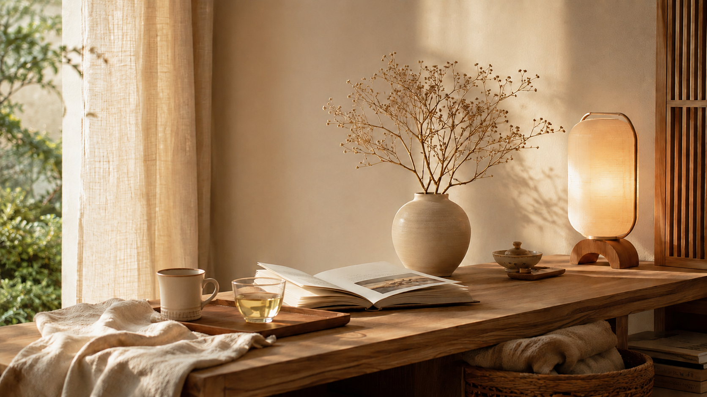
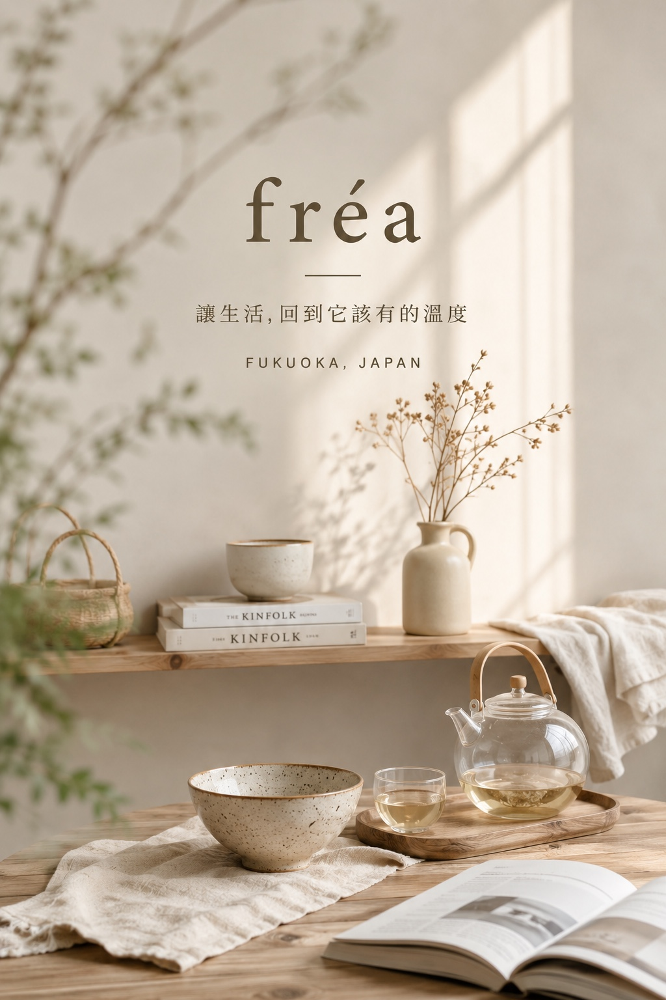
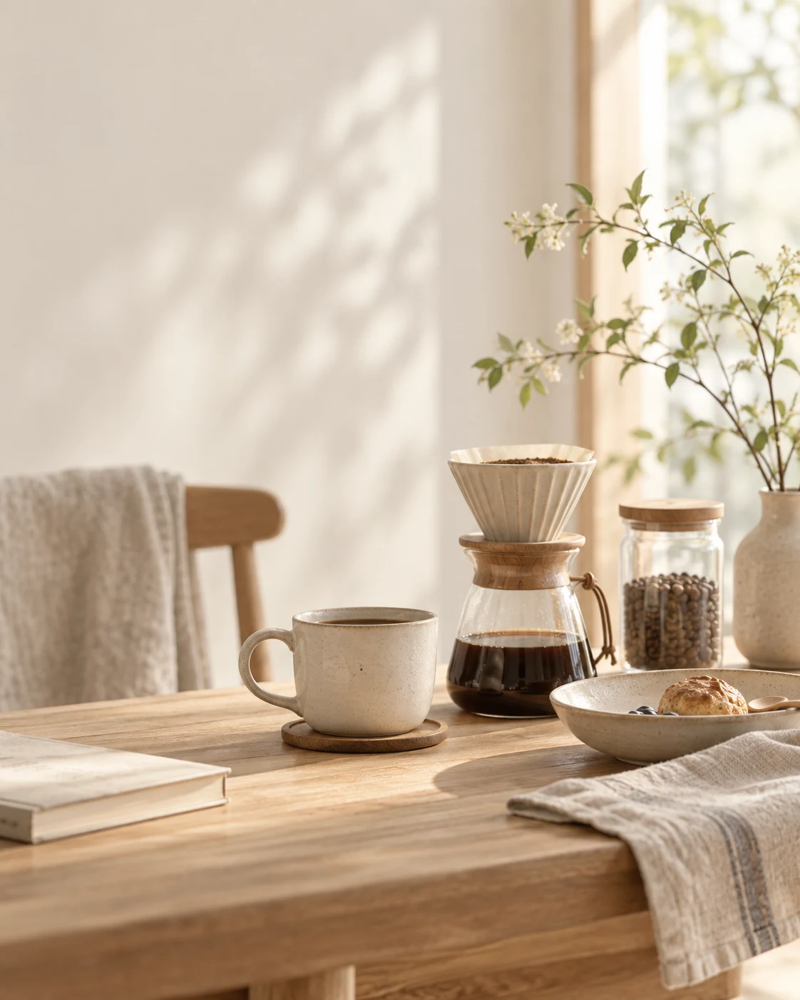

01
A LITTLE CURIOSITY
因為喜歡，所以多了解一點。
從一杯手沖咖啡開始
喜歡手沖咖啡，也喜歡研究沖煮的器具。
一把壺、一只濾杯，從設計到使用時的手感，都有讓人想多了解一點的細節。
對美食也是如此。吃到喜歡的味道，便會留意食材與調味，想知道那份美味從何而來。
這些喜歡，慢慢成為 fréa 的起點。

02
LIFE IN FUKUOKA
在福岡生活，把喜歡看得更仔細
生活在福岡，讓我們有機會走進店裡、接觸商品，從日常中慢慢發現值得分享的東西。
因為自己喜歡，挑選時也會多問一些：器具是否順手？食材有什麼特色？那些看似微小的設計，會替使用的人帶來什麼不同？
fréa 的選品，就從這份好奇與在意開始。從咖啡、食材，到餐桌與生活用品，我們希望每一次推薦，都有具體的理由。
03
FOR YOUR EVERYDAY
把這份喜歡，帶進你的日常
fréa 源自古英語，意為「主人」。我們喜歡把它理解為：成為自己生活的主人，用自己的方式，好好照料每一天。
一杯親手沖的咖啡，晚餐時盛飯的一只碗，柔軟乾爽的毛巾，或是一件讓料理變得更順手的小工具，都是日常裡可以留給自己的小小心意。
我們把喜歡、也了解過的好東西放在這裡。希望你慢慢逛，也能找到讓自己想沖一杯咖啡、做一頓飯，好好享受生活的理由。
fréa｜從福岡出發，分享我們喜歡的日常。
